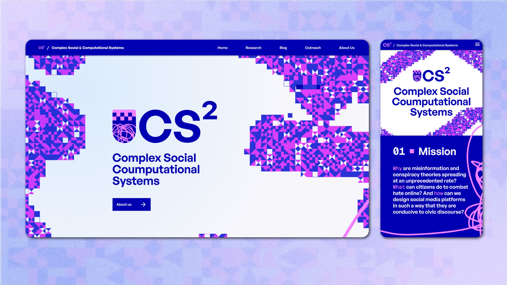

Complex Social &
Computational
Systems (CS²)
Website design for
a research group
Client
Complex Social & Computational Systems (CS²), University of Graz
Team
Natascha Schröer, Lenja Kausch

Concept and Idea
CS² is a research group at the University of Graz that studies how society and digital technology affect each other. The group wanted a website that would stand out and convince funders and fellow researchers of their work. It also had to show who they are: a young and dynamic research group. Our inspiration was the name itself and the contrast it contains between the social and the computational. One side is human, unpredictable and organic. The other is precise, structured and based on data. From this tension, we developed two design concepts.


Final Concept
The final design builds on the group’s existing logo. The logo already holds the contrast we were looking for: two opposing colours, magenta and blue, and an organic line set against geometric squares. We turned these elements into the visual language of the whole website. The two colours mark the two sides of the group’s research, and the lines and squares appear throughout the website as decorative elements.